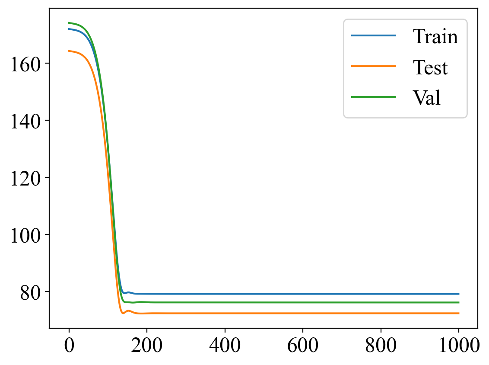
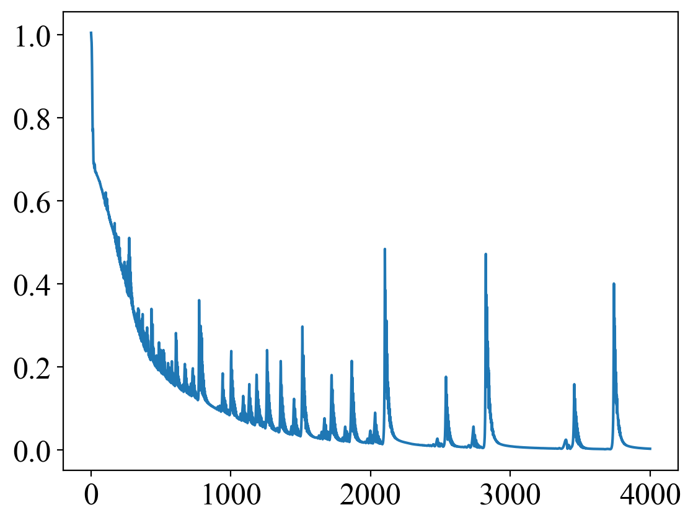
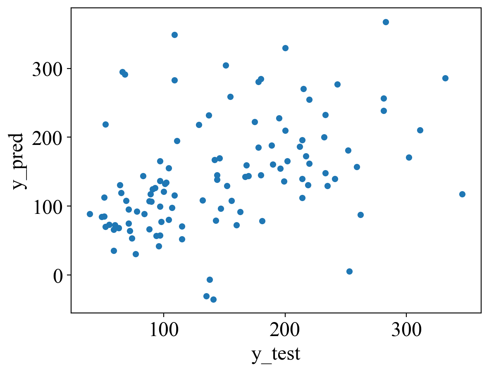

import os
import tempfile as tmp
import warnings
import pandas as pd
import numpy as np
import matplotlib.pyplot as plt
%config InlineBackend.figure_format = 'retina'
import sklearn.datasets
import sklearn.model_selection
os.environ['JOBLIB_TEMP_FOLDER'] = tmp.gettempdir()
os.environ['OMP_NUM_THREADS'] = '1'
os.environ['OPENBLAS_NUM_THREADS'] = '1'
os.environ['MKL_NUM_THREADS'] = '1'
warnings.simplefilter(action='ignore', category=UserWarning)
warnings.simplefilter(action='ignore', category=FutureWarning)—author: Nipun Batrabadges: truecategories:- ML- automl- neural-architecture-search- hyperparameter-optimization- automated-machine-learning- pytorchdate: ’2023-02-25’output-file: auto-pytorch.htmltitle: AutoML PyTorchtoc: true—
In this post, we look at AutoPyTorch, a framework for automated machine learning.
from autoPyTorch.api.tabular_regression import TabularRegressionTaskX, y = sklearn.datasets.load_diabetes(return_X_y=True, as_frame=True)
X_train, X_test, y_train, y_test = sklearn.model_selection.train_test_split(
X,
y,
random_state=1,
)
# Obtain training and validation data
X_train, X_valid, y_train, y_valid = sklearn.model_selection.train_test_split(
X_train,
y_train,
random_state=1,
)X_train.head()| age | sex | bmi | bp | s1 | s2 | s3 | s4 | s5 | s6 | |
|---|---|---|---|---|---|---|---|---|---|---|
| 52 | -0.052738 | -0.044642 | -0.009439 | -0.005671 | 0.039710 | 0.044719 | 0.026550 | -0.002592 | -0.018118 | -0.013504 |
| 121 | 0.063504 | -0.044642 | 0.017506 | 0.021872 | 0.008063 | 0.021546 | -0.036038 | 0.034309 | 0.019908 | 0.011349 |
| 170 | 0.023546 | 0.050680 | -0.020218 | -0.036656 | -0.013953 | -0.015092 | 0.059685 | -0.039493 | -0.096433 | -0.017646 |
| 287 | 0.045341 | -0.044642 | -0.006206 | -0.015999 | 0.125019 | 0.125198 | 0.019187 | 0.034309 | 0.032433 | -0.005220 |
| 397 | 0.052606 | -0.044642 | -0.004050 | -0.030918 | -0.046975 | -0.058307 | -0.013948 | -0.025840 | 0.036056 | 0.023775 |
y_train.head()52 59.0
121 173.0
170 47.0
287 219.0
397 198.0
Name: target, dtype: float64from sklearn.ensemble import RandomForestRegressor
from sklearn.metrics import mean_squared_error
rf = RandomForestRegressor(random_state=1)
rf.fit(X_train, y_train)
y_pred_rf = rf.predict(X_test)
np.sqrt(mean_squared_error(y_test, y_pred_rf))62.77500577100372pred_df = pd.DataFrame({"rf": y_pred_rf, "true": y_test})
pred_df.head()| rf | true | |
|---|---|---|
| 246 | 140.76 | 78.0 |
| 425 | 109.89 | 152.0 |
| 293 | 161.93 | 200.0 |
| 31 | 70.81 | 59.0 |
| 359 | 150.91 | 311.0 |
# Use validation dataset to find best hyperparameters for RF
rf = RandomForestRegressor(random_state=1)
hyperparameters = {"n_estimators": [10, 100, 1000], "max_depth": [1, 5, 10]}
from sklearn.model_selection import GridSearchCV
grid_search = GridSearchCV(rf, hyperparameters, cv=5, scoring="neg_root_mean_squared_error")
grid_search.fit(X_valid, y_valid)
grid_search.best_params_
{'max_depth': 5, 'n_estimators': 100}# Train the RF model using the best hyperparameters on train + validation data
rf = RandomForestRegressor(**grid_search.best_params_, random_state=1)
# Combine train and validation data
X_train_overall = pd.concat([X_train, X_valid])
y_train_overall = pd.concat([y_train, y_valid])
rf.fit(X_train_overall, y_train_overall)
y_pred_rf = rf.predict(X_test)
np.sqrt(mean_squared_error(y_test, y_pred_rf))61.69476644955032api = TabularRegressionTask()
# Do an api search without any memory limit but use only MLPs
api.search(
X_train=X_train_overall,
y_train=y_train_overall,
X_test=X_test.copy(),
y_test=y_test.copy(),
optimize_metric='r2',
total_walltime_limit=80,
func_eval_time_limit_secs=10,
dataset_name="Diabetes",
memory_limit=None,
enable_traditional_pipeline=True,
)<autoPyTorch.api.tabular_regression.TabularRegressionTask at 0x1945be6d0>y_pred = api.predict(X_test)
score = api.score(y_pred, y_test)
print(score)
np.sqrt(mean_squared_error(y_test, y_pred)){'r2': 0.3026643977627368}60.33987680300709# Print statistics from search
print(api.sprint_statistics())autoPyTorch results:
Dataset name: Diabetes
Optimisation Metric: r2
Best validation score: 0.4352600925944532
Number of target algorithm runs: 13
Number of successful target algorithm runs: 10
Number of crashed target algorithm runs: 2
Number of target algorithms that exceeded the time limit: 1
Number of target algorithms that exceeded the memory limit: 0
api.get_models_with_weights()[0](0.62,
MyTraditionalTabularRegressionPipeline(config='random_forest',
dataset_properties={'categorical_columns': [],
'categories': [],
'input_shape': (10,),
'is_small_preprocess': True,
'issigned': True,
'issparse': False,
'numerical_columns': [0,
1,
2,
3,
4,
5,
6,
7,
8,
9],
'output_shape': 1,
'output_type': 'continuous',
'target_type': 'tabular_regression',
'task_type': 'tabular_regression'},
init_params={'instance': None},
random_state=RandomState(MT19937) at 0x194150240))api.get_models_with_weights()[1](0.18,
________________________________________
TabularRegressionPipeline
________________________________________
0-) imputer:
SimpleImputer
1-) variance_threshold:
VarianceThreshold
2-) coalescer:
NoCoalescer
3-) encoder:
NoEncoder
4-) scaler:
StandardScaler
5-) feature_preprocessor:
NoFeaturePreprocessor
6-) tabular_transformer:
TabularColumnTransformer
7-) preprocessing:
EarlyPreprocessing
8-) network_embedding:
autoPyTorch.pipeline NoEmbedding
9-) network_backbone:
autoPyTorch.pipeline ShapedMLPBackbone
10-) network_head:
autoPyTorch.pipeline FullyConnectedHead
11-) network:
Sequential ({'random_state': RandomState(MT19937) at 0x19465E140, '_fit_requirements': [FitRequirement(name='network_head', supported_types=(<class 'torch.nn.modules.module.Module'>,), user_defined=False, dataset_property=False), FitRequirement(name='network_backbone', supported_types=(<class 'torch.nn.modules.module.Module'>,), user_defined=False, dataset_property=False), FitRequirement(name='network_embedding', supported_types=(<class 'torch.nn.modules.module.Module'>,), user_defined=False, dataset_property=False)], '_cs_updates': {}, 'device': device(type='cpu'), 'network': Sequential(
(0): _NoEmbedding()
(1): Sequential(
(0): Linear(in_features=10, out_features=200, bias=True)
(1): BatchNorm1d(200, eps=1e-05, momentum=0.1, affine=True, track_running_stats=True)
(2): ReLU()
(3): Linear(in_features=200, out_features=200, bias=True)
(4): BatchNorm1d(200, eps=1e-05, momentum=0.1, affine=True, track_running_stats=True)
(5): ReLU()
(6): Linear(in_features=200, out_features=200, bias=True)
(7): BatchNorm1d(200, eps=1e-05, momentum=0.1, affine=True, track_running_stats=True)
(8): ReLU()
(9): Linear(in_features=200, out_features=200, bias=True)
(10): BatchNorm1d(200, eps=1e-05, momentum=0.1, affine=True, track_running_stats=True)
(11): ReLU()
(12): Linear(in_features=200, out_features=200, bias=True)
)
(2): Sequential(
(0): Flatten(start_dim=1, end_dim=-1)
(1): Linear(in_features=200, out_features=128, bias=True)
(2): ReLU()
(3): Linear(in_features=128, out_features=1, bias=True)
)
), 'final_activation': None, 'is_fitted_': True})
12-) network_init:
XavierInit
13-) optimizer:
Adam ({'random_state': RandomState(MT19937) at 0x19465E140, '_fit_requirements': [FitRequirement(name='network', supported_types=(<class 'torch.nn.modules.module.Module'>,), user_defined=False, dataset_property=False)], '_cs_updates': {}, 'optimizer': Adam (
Parameter Group 0
amsgrad: False
betas: (0.9, 0.9)
capturable: False
eps: 1e-08
foreach: None
lr: 0.01
maximize: False
weight_decay: 0.0
), 'lr': 0.01, 'beta1': 0.9, 'beta2': 0.9, 'weight_decay': 0.0})
14-) lr_scheduler:
ReduceLROnPlateau
15-) data_loader:
DataLoader
16-) trainer:
autoPyTorch.pipeline Standard Trainer
________________________________________)api.get_models_with_weights()[2](0.16,
MyTraditionalTabularRegressionPipeline(config='svm',
dataset_properties={'categorical_columns': [],
'categories': [],
'input_shape': (10,),
'is_small_preprocess': True,
'issigned': True,
'issparse': False,
'numerical_columns': [0,
1,
2,
3,
4,
5,
6,
7,
8,
9],
'output_shape': 1,
'output_type': 'continuous',
'target_type': 'tabular_regression',
'task_type': 'tabular_regression'},
init_params={'instance': None},
random_state=RandomState(MT19937) at 0x194711B40))What if we fit only NNs?
api2 = TabularRegressionTask(seed=2, ensemble_size=0)
api2.search(
X_train=X_train,
y_train=y_train,
X_test=X_test.copy(),
y_test=y_test.copy(),
optimize_metric='r2',
total_walltime_limit=40,
func_eval_time_limit_secs=10,
dataset_name="Diabetes",
memory_limit=None,
enable_traditional_pipeline=False,
)[WARNING] [2023-02-27 18:29:06,260:Client-autoPyTorch.automl_common.common.utils.backend] Directory /var/folders/1x/wmgn24mn1bbd2vgbqlk98tbc0000gn/T/autoPyTorch_tmp_70d9fdb4-b69e-11ed-b5ea-3c7d0a00e5d9/.autoPyTorch/ensembles does not exist
[ERROR] [2023-02-27 18:29:06,261:Client-AutoPyTorch:Diabetes:2] No valid ensemble was created. Please check the logfile for errors. Default to the best individual estimator:[(2, 2, 5.555555555555555)]
NoneType: None<autoPyTorch.api.tabular_regression.TabularRegressionTask at 0x194d3f160>y_pred2 = api2.predict(X_test)
score2 = api2.score(y_pred2, y_test)
score2{'r2': -0.37656772470491995}np.sqrt(mean_squared_error(y_test, y_pred2))84.77782906691597Okay, it seems we are worse than the random forest. Let’s see what happened.
api2.get_models_with_weights()[0](1.0,
________________________________________
TabularRegressionPipeline
________________________________________
0-) imputer:
SimpleImputer
1-) variance_threshold:
VarianceThreshold
2-) coalescer:
NoCoalescer
3-) encoder:
NoEncoder
4-) scaler:
StandardScaler
5-) feature_preprocessor:
NoFeaturePreprocessor
6-) tabular_transformer:
TabularColumnTransformer
7-) preprocessing:
EarlyPreprocessing
8-) network_embedding:
autoPyTorch.pipeline NoEmbedding
9-) network_backbone:
autoPyTorch.pipeline ShapedMLPBackbone
10-) network_head:
autoPyTorch.pipeline FullyConnectedHead
11-) network:
Sequential ({'random_state': RandomState(MT19937) at 0x194711A40, '_fit_requirements': [FitRequirement(name='network_head', supported_types=(<class 'torch.nn.modules.module.Module'>,), user_defined=False, dataset_property=False), FitRequirement(name='network_backbone', supported_types=(<class 'torch.nn.modules.module.Module'>,), user_defined=False, dataset_property=False), FitRequirement(name='network_embedding', supported_types=(<class 'torch.nn.modules.module.Module'>,), user_defined=False, dataset_property=False)], '_cs_updates': {}, 'device': device(type='cpu'), 'network': Sequential(
(0): _NoEmbedding()
(1): Sequential(
(0): Linear(in_features=10, out_features=200, bias=True)
(1): BatchNorm1d(200, eps=1e-05, momentum=0.1, affine=True, track_running_stats=True)
(2): ReLU()
(3): Linear(in_features=200, out_features=200, bias=True)
(4): BatchNorm1d(200, eps=1e-05, momentum=0.1, affine=True, track_running_stats=True)
(5): ReLU()
(6): Linear(in_features=200, out_features=200, bias=True)
(7): BatchNorm1d(200, eps=1e-05, momentum=0.1, affine=True, track_running_stats=True)
(8): ReLU()
(9): Linear(in_features=200, out_features=200, bias=True)
(10): BatchNorm1d(200, eps=1e-05, momentum=0.1, affine=True, track_running_stats=True)
(11): ReLU()
(12): Linear(in_features=200, out_features=200, bias=True)
)
(2): Sequential(
(0): Flatten(start_dim=1, end_dim=-1)
(1): Linear(in_features=200, out_features=128, bias=True)
(2): ReLU()
(3): Linear(in_features=128, out_features=1, bias=True)
)
), 'final_activation': None, 'is_fitted_': True})
12-) network_init:
XavierInit
13-) optimizer:
Adam ({'random_state': RandomState(MT19937) at 0x194711A40, '_fit_requirements': [FitRequirement(name='network', supported_types=(<class 'torch.nn.modules.module.Module'>,), user_defined=False, dataset_property=False)], '_cs_updates': {}, 'optimizer': Adam (
Parameter Group 0
amsgrad: False
betas: (0.9, 0.9)
capturable: False
eps: 1e-08
foreach: None
lr: 0.01
maximize: False
weight_decay: 0.0
), 'lr': 0.01, 'beta1': 0.9, 'beta2': 0.9, 'weight_decay': 0.0})
14-) lr_scheduler:
ReduceLROnPlateau
15-) data_loader:
DataLoader
16-) trainer:
autoPyTorch.pipeline Standard Trainer
________________________________________)import torch
X_train_torch = torch.from_numpy(X_train.values).float()
y_train_torch = torch.from_numpy(y_train.values).float()
X_val_torch = torch.from_numpy(X_valid.values).float()
y_val_torch = torch.from_numpy(y_valid.values).float()
X_test_torch = torch.from_numpy(X_test.values).float()
y_test_torch = torch.from_numpy(y_test.values).float()# Build a simple MLP in PyTorch, train on training data and optimize on validation data
import torch.nn as nn
import torch.nn.functional as F
import torch.optim as optim
class Net(nn.Module):
def __init__(self, l1 = 64, l2 = 64, l3 = 64, l2_reg = 0.0):
super(Net, self).__init__()
self.l2_reg = l2_reg
self.fc1 = nn.Linear(10, l1)
self.fc2 = nn.Linear(l1, l2)
self.fc3 = nn.Linear(l2, l3)
self.fc4 = nn.Linear(l3, 1)
def forward(self, x):
# Add a residual connection
x = F.relu(self.fc1(x))
x = F.relu(self.fc2(x))
x = F.relu(self.fc3(x))
x = self.fc4(x)
return x
net = Net()
criterion = nn.MSELoss()
optimizer = optim.Adam(net.parameters(), lr=0.001)
train_losses = []
val_losses = []
test_losses = []
for epoch in range(1000): # loop over the dataset multiple times and store the train, test loss
optimizer.zero_grad()
outputs = net(X_train_torch)
loss = criterion(outputs, y_train_torch)
# Add L2 regularization
for param in net.parameters():
loss += net.l2_reg * torch.norm(param)
loss.backward()
optimizer.step()
train_losses.append(np.sqrt(loss.item()))
val_losses.append(np.sqrt(criterion(net(X_val_torch), y_val_torch).item()))
test_losses.append(np.sqrt(criterion(net(X_test_torch), y_test_torch).item()))
print('Finished Training')Finished Trainingplt.plot(train_losses, label="Train")
plt.plot(test_losses, label="Test")
plt.plot(val_losses, label="Val")
plt.legend()
with torch.no_grad():
outputs = net(X_test_torch)
loss = criterion(outputs, y_test_torch)
print(f"Test loss: {np.sqrt(loss.item())}")
outputs = net(X_train_torch)
loss = criterion(outputs, y_train_torch)
print(f"Train loss: {np.sqrt(loss.item())}")
print("")Test loss: 72.43299031475574
Train loss: 79.2251754050993
# Fit the NN model using scaled y values
# Using sklearn's StandardScaler to scale the y values
from sklearn.preprocessing import StandardScaler
scaler = StandardScaler()
y_train_scaled = scaler.fit_transform(y_train.values.reshape(-1, 1))
y_train_scaled = torch.from_numpy(y_train_scaled).float()
y_test_scaled = scaler.transform(y_test.values.reshape(-1, 1))
y_test_scaled = torch.from_numpy(y_test_scaled).float()
y_valid_scaled = scaler.transform(y_valid.values.reshape(-1, 1))
y_valid_scaled = torch.from_numpy(y_valid_scaled).float()
net = Net()
criterion = nn.MSELoss()
optimizer = optim.Adam(net.parameters(), lr=0.01)
train_losses = []
val_losses = []
test_losses = []
for epoch in range(4000): # loop over the dataset multiple times and store the train, test loss
optimizer.zero_grad()
outputs = net(X_train_torch)
loss = criterion(outputs, y_train_scaled)
# Add L2 regularization
for param in net.parameters():
loss += net.l2_reg * torch.norm(param)
loss.backward()
optimizer.step()
train_losses.append(np.sqrt(loss.item()))
print('Finished Training')
Finished Trainingplt.plot(train_losses, label="Train")
# Predict the scaled y values and inverse transform them to get the original y values
with torch.no_grad():
outputs = net(X_test_torch)# Inverse transform the scaled y values to get the original y values
y_pred = scaler.inverse_transform(outputs.numpy())
y_pred = y_pred.reshape(-1)
print(f"Test RMSE: {np.sqrt(mean_squared_error(y_test, y_pred))}")Test RMSE: 82.79070717489064pd.DataFrame({"y_test": y_test, "y_pred": y_pred}).plot.scatter(x="y_test", y="y_pred")
# At this point it seems our model is worse than RF, Auto model containing Catboost etc. Let us optimize our NN
# I will use Ray Tune to optimize the hyperparameters
import ray
from ray import tune
from ray.tune import CLIReporter
from ray.tune.schedulers import ASHAScheduler
def train_mlp(config):
net = Net(config["l1"], config["l2"], config["l3"], config["l2_reg"])
criterion = nn.MSELoss()
criterion = nn.MSELoss()
optimizer = optim.Adam(net.parameters(), lr=config["lr"])
for epoch in range(1000): # loop over the dataset multiple times and store the train, test loss
optimizer.zero_grad()
outputs = net(X_train_torch)
loss = criterion(outputs, y_train_scaled)
# Add l2 regularization to loss
l2_reg = torch.tensor(0.)
for param in net.parameters():
l2_reg += torch.norm(param)
loss += config["l2_reg"] * l2_reg
loss.backward()
optimizer.step()
with torch.no_grad():
outputs = net(X_val_torch)
# Inverse transform the scaled y values to get the original y values
y_pred = scaler.inverse_transform(outputs.numpy())
loss = np.sqrt(mean_squared_error(y_valid, y_pred))
return {"loss": loss, "status": "ok"}ray.shutdown()
ray.init()
scheduler = ASHAScheduler(
metric="loss",
mode="min",
max_t=100,
grace_period=1,
reduction_factor=2)
reporter = CLIReporter(
parameter_columns=["l1", "l2", "l3", "lr", "l2_reg"],
metric_columns=["loss", "training_iteration"])
analysis = tune.run(
train_mlp,
resources_per_trial={"cpu": 1},
config={
"l1": tune.choice([2, 4, 16, 32, 64, 128, 256]),
"l2": tune.choice([2, 4, 16, 32, 64, 128, 256]),
"l3": tune.choice([2, 4, 16, 32, 64, 128, 256]),
"l2_reg": tune.loguniform(1e-4, 1.0),
"lr": tune.loguniform(1e-4, 1.0),
},
num_samples=50,
scheduler=scheduler,
progress_reporter=reporter)
Trial Progress
| Trial name | date | done | episodes_total | experiment_id | hostname | iterations_since_restore | loss | node_ip | pid | status | time_since_restore | time_this_iter_s | time_total_s | timestamp | timesteps_since_restore | timesteps_total | training_iteration | trial_id | warmup_time |
|---|---|---|---|---|---|---|---|---|---|---|---|---|---|---|---|---|---|---|---|
| train_mlp_c8d42_00000 | 2023-02-28_10-08-51 | True | 684a45c7048544b384d756bd20117055 | Nipuns-iMac-8.local | 1 | 76.2275 | 127.0.0.1 | 99588 | ok | 2.44738 | 2.44738 | 2.44738 | 1677559131 | 0 | 1 | c8d42_00000 | 0.00341606 | ||
| train_mlp_c8d42_00001 | 2023-02-28_10-08-59 | True | 23a98dd3be3d4ad2abbc0a44970bd41b | Nipuns-iMac-8.local | 1 | 76.2183 | 127.0.0.1 | 99594 | ok | 4.5987 | 4.5987 | 4.5987 | 1677559139 | 0 | 1 | c8d42_00001 | 0.00891805 | ||
| train_mlp_c8d42_00002 | 2023-02-28_10-08-58 | True | f1614c13b37a4966adb785c911a54c11 | Nipuns-iMac-8.local | 1 | 76.2261 | 127.0.0.1 | 99595 | ok | 2.89705 | 2.89705 | 2.89705 | 1677559138 | 0 | 1 | c8d42_00002 | 0.0356119 | ||
| train_mlp_c8d42_00003 | 2023-02-28_10-08-57 | True | e9475ee5dd1f4d1289ef144d1a7879ad | Nipuns-iMac-8.local | 1 | 51.6545 | 127.0.0.1 | 99596 | ok | 2.83387 | 2.83387 | 2.83387 | 1677559137 | 0 | 1 | c8d42_00003 | 0.00670218 | ||
| train_mlp_c8d42_00004 | 2023-02-28_10-08-57 | True | 97bdec82d1ec44069bc84210c4a6a18e | Nipuns-iMac-8.local | 1 | 65.3017 | 127.0.0.1 | 99597 | ok | 2.6755 | 2.6755 | 2.6755 | 1677559137 | 0 | 1 | c8d42_00004 | 0.00920701 | ||
| train_mlp_c8d42_00005 | 2023-02-28_10-08-59 | True | 3db458192e6944118049623bfe3128a4 | Nipuns-iMac-8.local | 1 | 76.1747 | 127.0.0.1 | 99598 | ok | 4.36245 | 4.36245 | 4.36245 | 1677559139 | 0 | 1 | c8d42_00005 | 0.00544381 | ||
| train_mlp_c8d42_00006 | 2023-02-28_10-08-59 | True | 6b794ba131304c9e841b2d671a1a4693 | Nipuns-iMac-8.local | 1 | 76.2181 | 127.0.0.1 | 99601 | ok | 4.51009 | 4.51009 | 4.51009 | 1677559139 | 0 | 1 | c8d42_00006 | 0.00939798 | ||
| train_mlp_c8d42_00007 | 2023-02-28_10-09-06 | True | 38d637c01fcb43d3be8db783cb837ea2 | Nipuns-iMac-8.local | 1 | 76.7874 | 127.0.0.1 | 99602 | ok | 11.1744 | 11.1744 | 11.1744 | 1677559146 | 0 | 1 | c8d42_00007 | 0.012325 | ||
| train_mlp_c8d42_00008 | 2023-02-28_10-09-00 | True | a15c3445ce1e4ffeba2eabf9098820f2 | Nipuns-iMac-8.local | 1 | 76.1934 | 127.0.0.1 | 99604 | ok | 4.98043 | 4.98043 | 4.98043 | 1677559140 | 0 | 1 | c8d42_00008 | 0.010926 | ||
| train_mlp_c8d42_00009 | 2023-02-28_10-09-00 | True | 9de7e974434443f6a12e1dbc614a8582 | Nipuns-iMac-8.local | 1 | 68.2169 | 127.0.0.1 | 99612 | ok | 5.00434 | 5.00434 | 5.00434 | 1677559140 | 0 | 1 | c8d42_00009 | 0.00496888 | ||
| train_mlp_c8d42_00010 | 2023-02-28_10-09-00 | True | d7fa3bf71c4d44dd90e2988c0e59687a | Nipuns-iMac-8.local | 1 | 76.2198 | 127.0.0.1 | 99613 | ok | 5.70828 | 5.70828 | 5.70828 | 1677559140 | 0 | 1 | c8d42_00010 | 0.00938773 | ||
| train_mlp_c8d42_00011 | 2023-02-28_10-09-03 | True | 6e08564fbc6d4f5c9bea59429a196a5e | Nipuns-iMac-8.local | 1 | 52.2075 | 127.0.0.1 | 99614 | ok | 8.02228 | 8.02228 | 8.02228 | 1677559143 | 0 | 1 | c8d42_00011 | 0.00922298 | ||
| train_mlp_c8d42_00012 | 2023-02-28_10-08-59 | True | 98349fab3a1b4027bc14d3ce239251fd | Nipuns-iMac-8.local | 1 | 76.1125 | 127.0.0.1 | 99615 | ok | 4.87773 | 4.87773 | 4.87773 | 1677559139 | 0 | 1 | c8d42_00012 | 0.00547719 | ||
| train_mlp_c8d42_00013 | 2023-02-28_10-08-58 | True | 6356d7d5564f49ac84f1f5221bccaa3e | Nipuns-iMac-8.local | 1 | 76.2163 | 127.0.0.1 | 99616 | ok | 3.31126 | 3.31126 | 3.31126 | 1677559138 | 0 | 1 | c8d42_00013 | 0.0112782 | ||
| train_mlp_c8d42_00014 | 2023-02-28_10-09-00 | True | e4c8bef4a7e246c19960353c87f60541 | Nipuns-iMac-8.local | 1 | 76.2002 | 127.0.0.1 | 99617 | ok | 5.44697 | 5.44697 | 5.44697 | 1677559140 | 0 | 1 | c8d42_00014 | 0.0142629 | ||
| train_mlp_c8d42_00015 | 2023-02-28_10-09-01 | True | f91e68c1ff9a486f9f74c54403e236f4 | Nipuns-iMac-8.local | 1 | 51.5808 | 127.0.0.1 | 99618 | ok | 5.94224 | 5.94224 | 5.94224 | 1677559141 | 0 | 1 | c8d42_00015 | 0.00973487 | ||
| train_mlp_c8d42_00016 | 2023-02-28_10-08-59 | True | 684a45c7048544b384d756bd20117055 | Nipuns-iMac-8.local | 1 | 85.4019 | 127.0.0.1 | 99588 | ok | 4.64298 | 4.64298 | 4.64298 | 1677559139 | 0 | 1 | c8d42_00016 | 0.00341606 | ||
| train_mlp_c8d42_00017 | 2023-02-28_10-09-01 | True | 97bdec82d1ec44069bc84210c4a6a18e | Nipuns-iMac-8.local | 1 | 76.2217 | 127.0.0.1 | 99597 | ok | 3.26168 | 3.26168 | 3.26168 | 1677559141 | 0 | 1 | c8d42_00017 | 0.00920701 | ||
| train_mlp_c8d42_00018 | 2023-02-28_10-09-00 | True | e9475ee5dd1f4d1289ef144d1a7879ad | Nipuns-iMac-8.local | 1 | 52.4798 | 127.0.0.1 | 99596 | ok | 2.94631 | 2.94631 | 2.94631 | 1677559140 | 0 | 1 | c8d42_00018 | 0.00670218 | ||
| train_mlp_c8d42_00019 | 2023-02-28_10-09-10 | True | f1614c13b37a4966adb785c911a54c11 | Nipuns-iMac-8.local | 1 | 51.5559 | 127.0.0.1 | 99595 | ok | 12.1603 | 12.1603 | 12.1603 | 1677559150 | 0 | 1 | c8d42_00019 | 0.0356119 | ||
| train_mlp_c8d42_00020 | 2023-02-28_10-09-04 | True | 6356d7d5564f49ac84f1f5221bccaa3e | Nipuns-iMac-8.local | 1 | 54.8401 | 127.0.0.1 | 99616 | ok | 5.67631 | 5.67631 | 5.67631 | 1677559144 | 0 | 1 | c8d42_00020 | 0.0112782 | ||
| train_mlp_c8d42_00021 | 2023-02-28_10-09-03 | True | 3db458192e6944118049623bfe3128a4 | Nipuns-iMac-8.local | 1 | 80.9971 | 127.0.0.1 | 99598 | ok | 4.02288 | 4.02288 | 4.02288 | 1677559143 | 0 | 1 | c8d42_00021 | 0.00544381 | ||
| train_mlp_c8d42_00022 | 2023-02-28_10-09-04 | True | 6b794ba131304c9e841b2d671a1a4693 | Nipuns-iMac-8.local | 1 | 62.7729 | 127.0.0.1 | 99601 | ok | 5.19184 | 5.19184 | 5.19184 | 1677559144 | 0 | 1 | c8d42_00022 | 0.00939798 | ||
| train_mlp_c8d42_00023 | 2023-02-28_10-09-03 | True | 23a98dd3be3d4ad2abbc0a44970bd41b | Nipuns-iMac-8.local | 1 | 52.487 | 127.0.0.1 | 99594 | ok | 3.83576 | 3.83576 | 3.83576 | 1677559143 | 0 | 1 | c8d42_00023 | 0.00891805 | ||
| train_mlp_c8d42_00024 | 2023-02-28_10-09-09 | True | 684a45c7048544b384d756bd20117055 | Nipuns-iMac-8.local | 1 | 76.1853 | 127.0.0.1 | 99588 | ok | 10.1193 | 10.1193 | 10.1193 | 1677559149 | 0 | 1 | c8d42_00024 | 0.00341606 | ||
| train_mlp_c8d42_00025 | 2023-02-28_10-09-04 | True | 98349fab3a1b4027bc14d3ce239251fd | Nipuns-iMac-8.local | 1 | 76.2173 | 127.0.0.1 | 99615 | ok | 4.14031 | 4.14031 | 4.14031 | 1677559144 | 0 | 1 | c8d42_00025 | 0.00547719 | ||
| train_mlp_c8d42_00026 | 2023-02-28_10-09-06 | True | a15c3445ce1e4ffeba2eabf9098820f2 | Nipuns-iMac-8.local | 1 | 68.3927 | 127.0.0.1 | 99604 | ok | 6.18441 | 6.18441 | 6.18441 | 1677559146 | 0 | 1 | c8d42_00026 | 0.010926 | ||
| train_mlp_c8d42_00027 | 2023-02-28_10-09-03 | True | 9de7e974434443f6a12e1dbc614a8582 | Nipuns-iMac-8.local | 1 | 76.218 | 127.0.0.1 | 99612 | ok | 3.01754 | 3.01754 | 3.01754 | 1677559143 | 0 | 1 | c8d42_00027 | 0.00496888 | ||
| train_mlp_c8d42_00028 | 2023-02-28_10-09-06 | True | e4c8bef4a7e246c19960353c87f60541 | Nipuns-iMac-8.local | 1 | 66.4336 | 127.0.0.1 | 99617 | ok | 5.79445 | 5.79445 | 5.79445 | 1677559146 | 0 | 1 | c8d42_00028 | 0.0142629 | ||
| train_mlp_c8d42_00029 | 2023-02-28_10-09-03 | True | d7fa3bf71c4d44dd90e2988c0e59687a | Nipuns-iMac-8.local | 1 | 76.2164 | 127.0.0.1 | 99613 | ok | 2.94911 | 2.94911 | 2.94911 | 1677559143 | 0 | 1 | c8d42_00029 | 0.00938773 | ||
| train_mlp_c8d42_00030 | 2023-02-28_10-09-05 | True | e9475ee5dd1f4d1289ef144d1a7879ad | Nipuns-iMac-8.local | 1 | 75.2123 | 127.0.0.1 | 99596 | ok | 4.99429 | 4.99429 | 4.99429 | 1677559145 | 0 | 1 | c8d42_00030 | 0.00670218 | ||
| train_mlp_c8d42_00031 | 2023-02-28_10-09-06 | True | f91e68c1ff9a486f9f74c54403e236f4 | Nipuns-iMac-8.local | 1 | 51.925 | 127.0.0.1 | 99618 | ok | 4.96918 | 4.96918 | 4.96918 | 1677559146 | 0 | 1 | c8d42_00031 | 0.00973487 | ||
| train_mlp_c8d42_00032 | 2023-02-28_10-09-04 | True | 97bdec82d1ec44069bc84210c4a6a18e | Nipuns-iMac-8.local | 1 | 76.4117 | 127.0.0.1 | 99597 | ok | 3.24968 | 3.24968 | 3.24968 | 1677559144 | 0 | 1 | c8d42_00032 | 0.00920701 | ||
| train_mlp_c8d42_00033 | 2023-02-28_10-09-08 | True | 6e08564fbc6d4f5c9bea59429a196a5e | Nipuns-iMac-8.local | 1 | 70.9285 | 127.0.0.1 | 99614 | ok | 5.80603 | 5.80603 | 5.80603 | 1677559148 | 0 | 1 | c8d42_00033 | 0.00922298 | ||
| train_mlp_c8d42_00034 | 2023-02-28_10-09-08 | True | 9de7e974434443f6a12e1dbc614a8582 | Nipuns-iMac-8.local | 1 | 51.9675 | 127.0.0.1 | 99612 | ok | 5.20552 | 5.20552 | 5.20552 | 1677559148 | 0 | 1 | c8d42_00034 | 0.00496888 | ||
| train_mlp_c8d42_00035 | 2023-02-28_10-09-07 | True | 3db458192e6944118049623bfe3128a4 | Nipuns-iMac-8.local | 1 | 76.1776 | 127.0.0.1 | 99598 | ok | 3.86612 | 3.86612 | 3.86612 | 1677559147 | 0 | 1 | c8d42_00035 | 0.00544381 | ||
| train_mlp_c8d42_00036 | 2023-02-28_10-09-07 | True | 23a98dd3be3d4ad2abbc0a44970bd41b | Nipuns-iMac-8.local | 1 | 76.2167 | 127.0.0.1 | 99594 | ok | 3.56161 | 3.56161 | 3.56161 | 1677559147 | 0 | 1 | c8d42_00036 | 0.00891805 | ||
| train_mlp_c8d42_00037 | 2023-02-28_10-09-07 | True | d7fa3bf71c4d44dd90e2988c0e59687a | Nipuns-iMac-8.local | 1 | 51.8721 | 127.0.0.1 | 99613 | ok | 4.08222 | 4.08222 | 4.08222 | 1677559147 | 0 | 1 | c8d42_00037 | 0.00938773 | ||
| train_mlp_c8d42_00038 | 2023-02-28_10-09-10 | True | 98349fab3a1b4027bc14d3ce239251fd | Nipuns-iMac-8.local | 1 | 76.2166 | 127.0.0.1 | 99615 | ok | 6.54892 | 6.54892 | 6.54892 | 1677559150 | 0 | 1 | c8d42_00038 | 0.00547719 | ||
| train_mlp_c8d42_00039 | 2023-02-28_10-09-07 | True | 6356d7d5564f49ac84f1f5221bccaa3e | Nipuns-iMac-8.local | 1 | 71.0616 | 127.0.0.1 | 99616 | ok | 3.14067 | 3.14067 | 3.14067 | 1677559147 | 0 | 1 | c8d42_00039 | 0.0112782 | ||
| train_mlp_c8d42_00040 | 2023-02-28_10-09-07 | True | 97bdec82d1ec44069bc84210c4a6a18e | Nipuns-iMac-8.local | 1 | 78.2332 | 127.0.0.1 | 99597 | ok | 3.1038 | 3.1038 | 3.1038 | 1677559147 | 0 | 1 | c8d42_00040 | 0.00920701 | ||
| train_mlp_c8d42_00041 | 2023-02-28_10-09-09 | True | 6b794ba131304c9e841b2d671a1a4693 | Nipuns-iMac-8.local | 1 | 76.2681 | 127.0.0.1 | 99601 | ok | 4.69843 | 4.69843 | 4.69843 | 1677559149 | 0 | 1 | c8d42_00041 | 0.00939798 | ||
| train_mlp_c8d42_00042 | 2023-02-28_10-09-09 | True | e9475ee5dd1f4d1289ef144d1a7879ad | Nipuns-iMac-8.local | 1 | 64.8587 | 127.0.0.1 | 99596 | ok | 3.2481 | 3.2481 | 3.2481 | 1677559149 | 0 | 1 | c8d42_00042 | 0.00670218 | ||
| train_mlp_c8d42_00043 | 2023-02-28_10-09-09 | True | f91e68c1ff9a486f9f74c54403e236f4 | Nipuns-iMac-8.local | 1 | 76.2166 | 127.0.0.1 | 99618 | ok | 2.99345 | 2.99345 | 2.99345 | 1677559149 | 0 | 1 | c8d42_00043 | 0.00973487 | ||
| train_mlp_c8d42_00044 | 2023-02-28_10-09-09 | True | 38d637c01fcb43d3be8db783cb837ea2 | Nipuns-iMac-8.local | 1 | 76.2244 | 127.0.0.1 | 99602 | ok | 3.30911 | 3.30911 | 3.30911 | 1677559149 | 0 | 1 | c8d42_00044 | 0.012325 | ||
| train_mlp_c8d42_00045 | 2023-02-28_10-09-10 | True | a15c3445ce1e4ffeba2eabf9098820f2 | Nipuns-iMac-8.local | 1 | 51.9337 | 127.0.0.1 | 99604 | ok | 3.84642 | 3.84642 | 3.84642 | 1677559150 | 0 | 1 | c8d42_00045 | 0.010926 | ||
| train_mlp_c8d42_00046 | 2023-02-28_10-09-10 | True | e4c8bef4a7e246c19960353c87f60541 | Nipuns-iMac-8.local | 1 | 76.2167 | 127.0.0.1 | 99617 | ok | 3.67529 | 3.67529 | 3.67529 | 1677559150 | 0 | 1 | c8d42_00046 | 0.0142629 | ||
| train_mlp_c8d42_00047 | 2023-02-28_10-09-09 | True | 23a98dd3be3d4ad2abbc0a44970bd41b | Nipuns-iMac-8.local | 1 | 73.6947 | 127.0.0.1 | 99594 | ok | 2.20929 | 2.20929 | 2.20929 | 1677559149 | 0 | 1 | c8d42_00047 | 0.00891805 | ||
| train_mlp_c8d42_00048 | 2023-02-28_10-09-09 | True | 6356d7d5564f49ac84f1f5221bccaa3e | Nipuns-iMac-8.local | 1 | 76.2164 | 127.0.0.1 | 99616 | ok | 2.29378 | 2.29378 | 2.29378 | 1677559149 | 0 | 1 | c8d42_00048 | 0.0112782 | ||
| train_mlp_c8d42_00049 | 2023-02-28_10-09-09 | True | 3db458192e6944118049623bfe3128a4 | Nipuns-iMac-8.local | 1 | 60.3637 | 127.0.0.1 | 99598 | ok | 2.2852 | 2.2852 | 2.2852 | 1677559149 | 0 | 1 | c8d42_00049 | 0.00544381 |
2023-02-28 10:09:11,027 INFO tune.py:762 -- Total run time: 26.09 seconds (25.84 seconds for the tuning loop).# Print the table for all the trials
df = analysis.results_df
# Sort the table by loss
df.sort_values(by="loss", inplace=True)
# Show only loss, config/l1, config/l2, config/l3, config/lr, training_iteration
df[["loss", "config/l1", "config/l2", "config/l3", "config/lr", "config/l2_reg"]]| loss | config/l1 | config/l2 | config/l3 | config/lr | config/l2_reg | |
|---|---|---|---|---|---|---|
| trial_id | ||||||
| c8d42_00019 | 51.555930 | 256 | 256 | 128 | 0.000125 | 0.027615 |
| c8d42_00015 | 51.580817 | 4 | 64 | 256 | 0.003980 | 0.015450 |
| c8d42_00003 | 51.654479 | 2 | 64 | 4 | 0.000991 | 0.015054 |
| c8d42_00037 | 51.872128 | 128 | 32 | 32 | 0.000114 | 0.005181 |
| c8d42_00031 | 51.925027 | 128 | 64 | 32 | 0.000103 | 0.001919 |
| c8d42_00045 | 51.933658 | 64 | 256 | 16 | 0.000139 | 0.000221 |
| c8d42_00034 | 51.967532 | 2 | 128 | 128 | 0.000371 | 0.000860 |
| c8d42_00011 | 52.207469 | 16 | 256 | 128 | 0.000134 | 0.001002 |
| c8d42_00018 | 52.479806 | 2 | 16 | 4 | 0.002317 | 0.000166 |
| c8d42_00023 | 52.486995 | 64 | 64 | 16 | 0.000214 | 0.025084 |
| c8d42_00020 | 54.840118 | 2 | 128 | 128 | 0.001178 | 0.001264 |
| c8d42_00049 | 60.363672 | 4 | 128 | 16 | 0.003238 | 0.000639 |
| c8d42_00022 | 62.772853 | 256 | 4 | 64 | 0.000419 | 0.000484 |
| c8d42_00042 | 64.858708 | 128 | 32 | 2 | 0.001164 | 0.000313 |
| c8d42_00004 | 65.301650 | 4 | 2 | 32 | 0.071916 | 0.000168 |
| c8d42_00028 | 66.433568 | 128 | 64 | 128 | 0.013376 | 0.002368 |
| c8d42_00009 | 68.216911 | 32 | 256 | 2 | 0.000931 | 0.001888 |
| c8d42_00026 | 68.392660 | 2 | 256 | 64 | 0.025460 | 0.000803 |
| c8d42_00033 | 70.928476 | 2 | 256 | 64 | 0.016914 | 0.000214 |
| c8d42_00039 | 71.061583 | 16 | 4 | 64 | 0.007347 | 0.000135 |
| c8d42_00047 | 73.694689 | 4 | 2 | 32 | 0.000104 | 0.001308 |
| c8d42_00030 | 75.212274 | 16 | 256 | 2 | 0.004354 | 0.000746 |
| c8d42_00012 | 76.112538 | 128 | 128 | 4 | 0.226784 | 0.140003 |
| c8d42_00005 | 76.174661 | 4 | 4 | 256 | 0.086190 | 0.563438 |
| c8d42_00035 | 76.177571 | 64 | 4 | 128 | 0.166371 | 0.330122 |
| c8d42_00024 | 76.185294 | 32 | 256 | 256 | 0.159865 | 0.671139 |
| c8d42_00008 | 76.193428 | 256 | 32 | 16 | 0.113514 | 0.062898 |
| c8d42_00014 | 76.200245 | 32 | 128 | 128 | 0.561836 | 0.000226 |
| c8d42_00013 | 76.216345 | 64 | 16 | 64 | 0.000173 | 0.194086 |
| c8d42_00048 | 76.216390 | 64 | 16 | 64 | 0.301651 | 0.000141 |
| c8d42_00029 | 76.216436 | 16 | 2 | 2 | 0.085926 | 0.000206 |
| c8d42_00038 | 76.216618 | 16 | 256 | 256 | 0.005644 | 0.210313 |
| c8d42_00043 | 76.216619 | 64 | 16 | 64 | 0.000284 | 0.433444 |
| c8d42_00046 | 76.216670 | 256 | 64 | 2 | 0.000617 | 0.181541 |
| c8d42_00036 | 76.216674 | 2 | 64 | 64 | 0.680740 | 0.005030 |
| c8d42_00025 | 76.217288 | 16 | 128 | 16 | 0.002700 | 0.051269 |
| c8d42_00027 | 76.218050 | 2 | 4 | 32 | 0.001925 | 0.194493 |
| c8d42_00006 | 76.218069 | 256 | 2 | 64 | 0.003326 | 0.233648 |
| c8d42_00001 | 76.218267 | 2 | 16 | 256 | 0.122404 | 0.001683 |
| c8d42_00010 | 76.219815 | 128 | 128 | 64 | 0.006478 | 0.178694 |
| c8d42_00017 | 76.221708 | 32 | 32 | 16 | 0.004100 | 0.520138 |
| c8d42_00044 | 76.224417 | 256 | 2 | 2 | 0.019401 | 0.077370 |
| c8d42_00002 | 76.226116 | 16 | 2 | 64 | 0.000326 | 0.028026 |
| c8d42_00000 | 76.227517 | 4 | 16 | 128 | 0.020000 | 0.307903 |
| c8d42_00041 | 76.268058 | 256 | 32 | 64 | 0.045152 | 0.252533 |
| c8d42_00032 | 76.411740 | 32 | 32 | 2 | 0.541939 | 0.193151 |
| c8d42_00007 | 76.787387 | 256 | 256 | 2 | 0.616285 | 0.114236 |
| c8d42_00040 | 78.233233 | 64 | 4 | 16 | 0.164726 | 0.000119 |
| c8d42_00021 | 80.997064 | 128 | 16 | 32 | 0.001292 | 0.002832 |
| c8d42_00016 | 85.401864 | 32 | 16 | 256 | 0.055791 | 0.000965 |
# Print the best hyperparameters
analysis.get_best_config(metric="loss", mode="min"){'l1': 256,
'l2': 256,
'l3': 128,
'l2_reg': 0.027614886800457164,
'lr': 0.00012453571993239395}# Perform the final test on the test set
best_config = analysis.get_best_config(metric="loss", mode="min")
# Use the best hyperparameters to train the model
net = Net(best_config["l1"], best_config["l2"], best_config["l3"], best_config["l2_reg"])
criterion = nn.MSELoss()
optimizer = optim.Adam(net.parameters(), lr=best_config["lr"])
for epoch in range(1000): # loop over the dataset multiple times and store the train, test loss
optimizer.zero_grad()
outputs = net(X_train_torch)
loss = criterion(outputs, y_train_scaled)
# Add L2 regularization
for param in net.parameters():
loss += net.l2_reg * torch.norm(param)
loss.backward()
optimizer.step()
with torch.no_grad():
outputs = net(X_test_torch)
# Inverse transform the scaled y values to get the original y values
y_pred = scaler.inverse_transform(outputs.numpy())
loss = np.sqrt(mean_squared_error(y_test, y_pred))
print(f"Test RMSE: {loss}")
print("")
Test RMSE: 54.06271747689579
pd.DataFrame({"y_test": y_test, "y_pred": y_pred.reshape(-1)})| y_test | y_pred | |
|---|---|---|
| 246 | 78.0 | 107.765800 |
| 425 | 152.0 | 110.693916 |
| 293 | 200.0 | 175.535324 |
| 31 | 59.0 | 82.328522 |
| 359 | 311.0 | 176.440598 |
| ... | ... | ... |
| 117 | 281.0 | 246.310699 |
| 139 | 281.0 | 245.451309 |
| 218 | 214.0 | 118.843346 |
| 93 | 96.0 | 77.727440 |
| 420 | 146.0 | 134.773529 |
111 rows × 2 columns
# Thus far it seems even with hyperparameter tuning we are unable to match the performance of ensemble models.
# Get the top 5 configurations
df[['loss', 'config/l1', 'config/l2', 'config/l3', 'config/lr', 'config/l2_reg']].head(5)| loss | config/l1 | config/l2 | config/l3 | config/lr | config/l2_reg | |
|---|---|---|---|---|---|---|
| trial_id | ||||||
| c8d42_00019 | 51.555930 | 256 | 256 | 128 | 0.000125 | 0.027615 |
| c8d42_00015 | 51.580817 | 4 | 64 | 256 | 0.003980 | 0.015450 |
| c8d42_00003 | 51.654479 | 2 | 64 | 4 | 0.000991 | 0.015054 |
| c8d42_00037 | 51.872128 | 128 | 32 | 32 | 0.000114 | 0.005181 |
| c8d42_00031 | 51.925027 | 128 | 64 | 32 | 0.000103 | 0.001919 |
config_list_of_dicts = df[['config/l1', 'config/l2', 'config/l3', 'config/lr', 'config/l2_reg']].head(5).to_dict('records')
# Train an ensemble of 5 models using the top 5 configurations
ensemble = []
for config in config_list_of_dicts:
net = Net(config["config/l1"], config["config/l2"], config["config/l3"], config["config/l2_reg"])
criterion = nn.MSELoss()
optimizer = optim.Adam(net.parameters(), lr=config["config/lr"])
for epoch in range(2000): # loop over the dataset multiple times and store the train, test loss
optimizer.zero_grad()
outputs = net(X_train_torch)
loss = criterion(outputs, y_train_scaled)
# Add L2 regularization
for param in net.parameters():
loss += net.l2_reg * torch.norm(param)
loss.backward()
optimizer.step()
ensemble.append(net)# Get the predictions from the ensemble
ensemble_preds = []
for net in ensemble:
with torch.no_grad():
outputs = net(X_test_torch)
# Scale the predictions back to the original scale
outputs = scaler.inverse_transform(outputs.numpy())
ensemble_preds.append(outputs)
ensemble_preds = np.array(ensemble_preds)
# Get the mean of the predictions
ensemble_preds_mean = ensemble_preds.mean(axis=0)
# Get the RMSE of the ensemble
criterion = nn.MSELoss()
loss = criterion(torch.tensor(ensemble_preds_mean), y_test_torch)
print(f"Test loss: {np.sqrt(loss.item())}")Test loss: 83.04458927945727Inputs to Meta Learning model
Data inputs
- Input vector: X is of shape N, D where N is the number of samples and D is the number of features
- Output vector: y is of shape N, 1
Encoder inputs
- Context vector: Containing C vectors of concatenated (X, y) pairs from the training set. Thus, shape of context vector is (C, D + 1)
### Encoder internals
- Encoding: Encoder is a neural network that takes in the context vector and outputs a vector of shape (C, E) where E is the encoding size
### Encoder outputs
- Encoder summary: A vector of shape (E, ) that is the mean of the encoding
### Decoder inputs
- Query vector: Containing Q vectors of X from test set. Thus, shape of query vector is (Q, D)
- It also takes the encoder summary as input of size (E, ). But, we make Q copies of the encoder summary and concatenate it with the query vector to get a vector of shape (Q, E + D)
### Decoder outputs
- Decoding: Decoder is a neural network that takes in the query vector and encoder summary and outputs a vector of shape (Q, 1)
D = X_train_torch.shape[1]# Building the encoder
# Takes as input the number of features, the number of nodes in 3 hidden layers, and the L2 regularization parameter
class Encoder(nn.Module):
def __init__(self, n_features = D+1, l1_size=32, l2_size=32, E = 32, l2_reg=0.0):
super(Encoder, self).__init__()
self.l1 = nn.Linear(n_features, l1_size)
self.l2 = nn.Linear(l1_size, l2_size)
self.l3 = nn.Linear(l2_size, E)
self.l2_reg = l2_reg
self.relu = nn.ReLU()
def forward(self, x):
x = self.relu(self.l1(x))
x = self.relu(self.l2(x))
x = self.relu(self.l3(x))
return x# Create C context vectors and pass them through the encoder
C = 5
Q = 2
encoder = Encoder(E=32)
# Create the context vectors input
C_idx = np.random.choice(X_train_torch.shape[0], C, replace=False)
C_idx = torch.tensor(C_idx)
# Get the Q query vectors
all_idx = np.arange(X_train_torch.shape[0])
Q_idx = np.random.choice(np.setdiff1d(all_idx, C_idx), Q, replace=False)
Q_idx = torch.tensor(Q_idx)
C_idx, Q_idx(tensor([108, 26, 25, 210, 151]), tensor([156, 230]))X_train_torch[C_idx], y_train_scaled[C_idx], y_train_torch[C_idx](tensor([[-0.0019, -0.0446, 0.0542, -0.0665, 0.0727, 0.0566, -0.0434, 0.0849,
0.0845, 0.0486],
[ 0.0817, 0.0507, 0.0013, 0.0356, 0.1264, 0.0911, 0.0192, 0.0343,
0.0845, -0.0301],
[ 0.0126, -0.0446, 0.0067, -0.0562, -0.0759, -0.0664, -0.0213, -0.0376,
-0.0181, -0.0922],
[ 0.0272, -0.0446, 0.0067, 0.0356, 0.0796, 0.0707, 0.0155, 0.0343,
0.0407, 0.0113],
[-0.0709, 0.0507, -0.0752, -0.0401, -0.0511, -0.0151, -0.0397, -0.0026,
-0.0964, -0.0342]]),
tensor([[ 0.4966],
[ 0.5471],
[ 0.3704],
[-1.0812],
[-1.2327]]),
tensor([192., 196., 182., 67., 55.]))context_input = torch.cat((X_train_torch[C_idx], y_train_scaled[C_idx].reshape(-1, 1)), axis=1)
pd.DataFrame(context_input)| 0 | 1 | 2 | 3 | 4 | 5 | 6 | 7 | 8 | 9 | 10 | |
|---|---|---|---|---|---|---|---|---|---|---|---|
| 0 | -0.001882 | -0.044642 | 0.054152 | -0.066495 | 0.072732 | 0.056619 | -0.043401 | 0.084863 | 0.084495 | 0.048628 | 0.496595 |
| 1 | 0.081666 | 0.050680 | 0.001339 | 0.035644 | 0.126395 | 0.091065 | 0.019187 | 0.034309 | 0.084495 | -0.030072 | 0.547084 |
| 2 | 0.012648 | -0.044642 | 0.006728 | -0.056166 | -0.075870 | -0.066449 | -0.021311 | -0.037648 | -0.018118 | -0.092204 | 0.370372 |
| 3 | 0.027178 | -0.044642 | 0.006728 | 0.035644 | 0.079612 | 0.070710 | 0.015505 | 0.034309 | 0.040672 | 0.011349 | -1.081190 |
| 4 | -0.070900 | 0.050680 | -0.075186 | -0.040099 | -0.051103 | -0.015092 | -0.039719 | -0.002592 | -0.096433 | -0.034215 | -1.232658 |
encoder(context_input).shapetorch.Size([5, 32])encoder(context_input).mean(axis=0).shapetorch.Size([32])# Now we will build the decoder
class Decoder(nn.Module):
def __init__(self, E=32, l1_size=32, l2_size=32, l2_reg=0.0):
super(Decoder, self).__init__()
self.l1 = nn.Linear(E, l1_size)
self.l2 = nn.Linear(l1_size, l2_size)
self.l3 = nn.Linear(l2_size, 1)
self.l2_reg = l2_reg
self.relu = nn.ReLU()
def forward(self, x):
x = self.relu(self.l1(x))
x = self.relu(self.l2(x))
x = self.relu(self.l3(x))
return x# Pass Q query vectors and the context vectors through the decoder
decoder = Decoder(E =32 + D)
mean_context = encoder(context_input).mean(axis=0)
# Repeat the mean context vector Q times
mean_context = mean_context.repeat(Q, 1)
mean_context.shapetorch.Size([2, 32])query = X_train_torch[Q_idx]
query.shapetorch.Size([2, 10])input_decoder = torch.cat((query, mean_context), axis=1)
input_decoder.shapetorch.Size([2, 42])decoder(input_decoder).shapetorch.Size([2, 1])# Building a meta learning class
class Meta(nn.Module):
def __init__(self, D = X_train_torch.shape[1], E = 32, C = 10, Q = 2, l1_size=32, l2_size=32, l2_reg=0.0):
super(Meta, self).__init__()
self.encoder = Encoder(D + 1, l1_size, l2_size, E, l2_reg)
self.decoder = Decoder(E + D, l1_size, l2_size, l2_reg)
self.D = D
self.E = E
self.C = C
self.Q = Q
self.l2_reg = l2_reg
def forward(self, context_input, query):
mean_context = self.encoder(context_input).mean(axis=0)
# Repeat the mean context vector Q times
mean_context = mean_context.repeat(self.Q, 1)
input_decoder = torch.cat((query, mean_context), axis=1)
return self.decoder(input_decoder)m = Meta()
m(context_input, query)tensor([[0.],
[0.]], grad_fn=<ReluBackward0>)# Create a function to get the context and query vectors
def get_context_query(X, y, C, Q):
C_idx = np.random.choice(X.shape[0], C, replace=False)
C_idx = torch.tensor(C_idx)
all_idx = np.arange(X.shape[0])
Q_idx = np.random.choice(np.setdiff1d(all_idx, C_idx), Q, replace=False)
Q_idx = torch.tensor(Q_idx)
context_input = torch.cat((X[C_idx], y[C_idx].reshape(-1, 1)), axis=1)
query = X[Q_idx]
return context_input, query, y[Q_idx]get_context_query(X_train_torch, y_train_torch, 10, 2)(tensor([[-6.0003e-02, -4.4642e-02, 1.3387e-03, -2.9771e-02, -7.0728e-03,
-2.1669e-02, 1.1824e-02, -2.5923e-03, 3.1815e-02, -5.4925e-02,
2.5800e+02],
[ 3.0811e-02, -4.4642e-02, -5.0396e-02, -2.2277e-03, -4.4223e-02,
-8.9935e-02, 1.1859e-01, -7.6395e-02, -1.8118e-02, 3.0644e-03,
8.7000e+01],
[ 6.7136e-02, -4.4642e-02, 3.4944e-03, 3.5644e-02, 4.9341e-02,
3.1254e-02, 7.0730e-02, -3.9493e-02, -6.0925e-04, 1.9633e-02,
7.3000e+01],
[ 1.2648e-02, -4.4642e-02, 6.7278e-03, -5.6166e-02, -7.5870e-02,
-6.6449e-02, -2.1311e-02, -3.7648e-02, -1.8118e-02, -9.2204e-02,
1.8200e+02],
[-6.3635e-02, 5.0680e-02, -7.9497e-02, -5.6706e-03, -7.1743e-02,
-6.6449e-02, -1.0266e-02, -3.9493e-02, -1.8118e-02, -5.4925e-02,
1.0100e+02],
[-1.8820e-03, -4.4642e-02, -6.6563e-02, 1.2151e-03, -2.9449e-03,
3.0702e-03, 1.1824e-02, -2.5923e-03, -2.0289e-02, -2.5930e-02,
7.9000e+01],
[-5.6370e-02, -4.4642e-02, -7.4108e-02, -5.0428e-02, -2.4960e-02,
-4.7034e-02, 9.2820e-02, -7.6395e-02, -6.1177e-02, -4.6641e-02,
4.8000e+01],
[-7.0900e-02, 5.0680e-02, -7.5186e-02, -4.0099e-02, -5.1103e-02,
-1.5092e-02, -3.9719e-02, -2.5923e-03, -9.6433e-02, -3.4215e-02,
5.5000e+01],
[ 3.8076e-02, 5.0680e-02, -2.9918e-02, -4.0099e-02, -3.3216e-02,
-2.4174e-02, -1.0266e-02, -2.5923e-03, -1.2908e-02, 3.0644e-03,
1.6000e+02],
[ 3.4443e-02, 5.0680e-02, 1.2529e-01, 2.8758e-02, -5.3855e-02,
-1.2900e-02, -1.0231e-01, 1.0811e-01, 2.7149e-04, 2.7917e-02,
3.4100e+02]]),
tensor([[ 0.0163, -0.0446, 0.0175, -0.0229, 0.0603, 0.0444, 0.0302, -0.0026,
0.0372, -0.0011],
[-0.0418, -0.0446, 0.0477, 0.0597, 0.1278, 0.1280, -0.0250, 0.1081,
0.0639, 0.0403]]),
tensor([128., 258.]))# Training loop
train_loss = []
val_losses = []
test_losses = []
for i in range(2000):
context_input, query, y_query = get_context_query(X_train_torch, y_train_scaled, 10, 2)
y_pred = m(context_input, query)
loss = criterion(y_pred, y_query)
optimizer.zero_grad()
loss.backward()
optimizer.step()
train_loss.append(loss.item())
if i % 100 == 0:
print(f"Epoch {i} - Train loss: {loss.item()}")
Epoch 0 - Train loss: 0.2789093554019928
Epoch 100 - Train loss: 1.1788500547409058
Epoch 200 - Train loss: 0.6084457039833069
Epoch 300 - Train loss: 0.6604040265083313
Epoch 400 - Train loss: 0.6397659778594971
Epoch 500 - Train loss: 0.18253237009048462
Epoch 600 - Train loss: 0.4401477575302124
Epoch 700 - Train loss: 0.19387057423591614
Epoch 800 - Train loss: 1.3166064023971558
Epoch 900 - Train loss: 0.4808962345123291
Epoch 1000 - Train loss: 0.2843365967273712
Epoch 1100 - Train loss: 0.35177987813949585
Epoch 1200 - Train loss: 1.1539983749389648
Epoch 1300 - Train loss: 2.0983378887176514
Epoch 1400 - Train loss: 3.325526237487793
Epoch 1500 - Train loss: 0.38105207681655884
Epoch 1600 - Train loss: 0.16427072882652283
Epoch 1700 - Train loss: 1.9909170866012573
Epoch 1800 - Train loss: 0.03792643919587135
Epoch 1900 - Train loss: 2.758319854736328plt.plot(train_loss)
context_input, _, _ = get_context_query(X_train_torch, y_train_torch, 10, query.shape[0])
context_input.shapetorch.Size([10, 11])X_test_torch.shapetorch.Size([111, 10])query.shapetorch.Size([2, 10])context_input.shapetorch.Size([10, 11])# Use whole of the test set as the query set
query = X_test_torch
y_query = y_test_torch
# get context from the training set
context_input, _, _ = get_context_query(X_train_torch, y_train_scaled, 10, query.shape[0])
m = Meta(C=10, Q=query.shape[0])
y_pred = m(context_input, query)
# Use inverse transform to get the original values
y_pred = scaler.inverse_transform(y_pred.detach().numpy())
print(f"Test loss: {np.sqrt(mean_squared_error(y_query, y_pred))}")Test loss: 75.22261810302734pd.DataFrame({"y_pred": y_pred.reshape(-1), "y_query": y_query})| y_pred | y_query | |
|---|---|---|
| 0 | 169.061569 | 78.0 |
| 1 | 168.179596 | 152.0 |
| 2 | 168.527161 | 200.0 |
| 3 | 168.452423 | 59.0 |
| 4 | 168.826492 | 311.0 |
| ... | ... | ... |
| 106 | 169.100494 | 281.0 |
| 107 | 168.457611 | 281.0 |
| 108 | 169.019516 | 214.0 |
| 109 | 168.639725 | 96.0 |
| 110 | 169.026901 | 146.0 |
111 rows × 2 columns